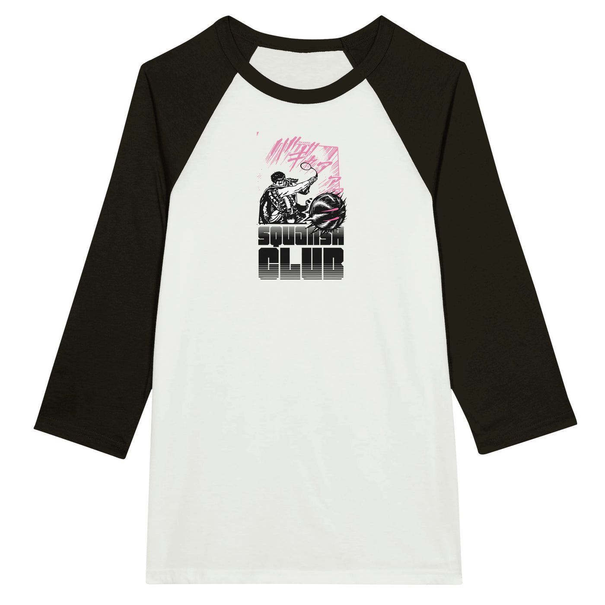
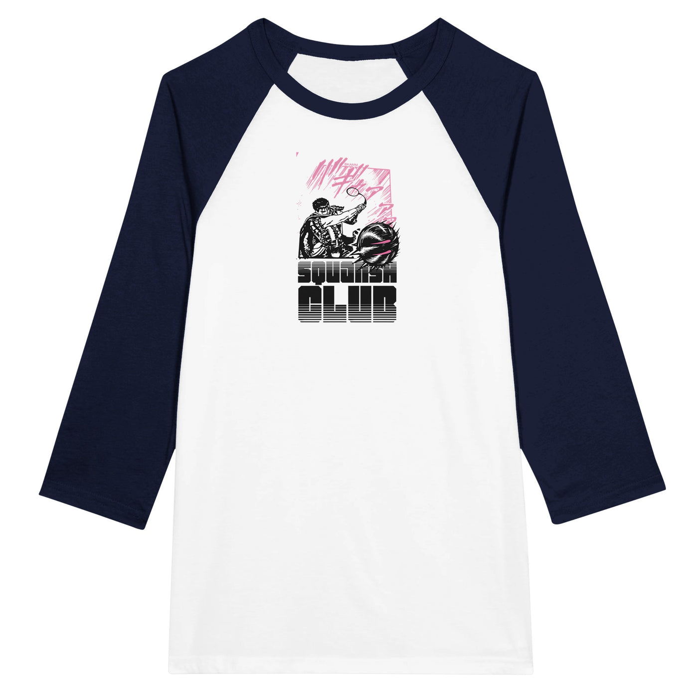
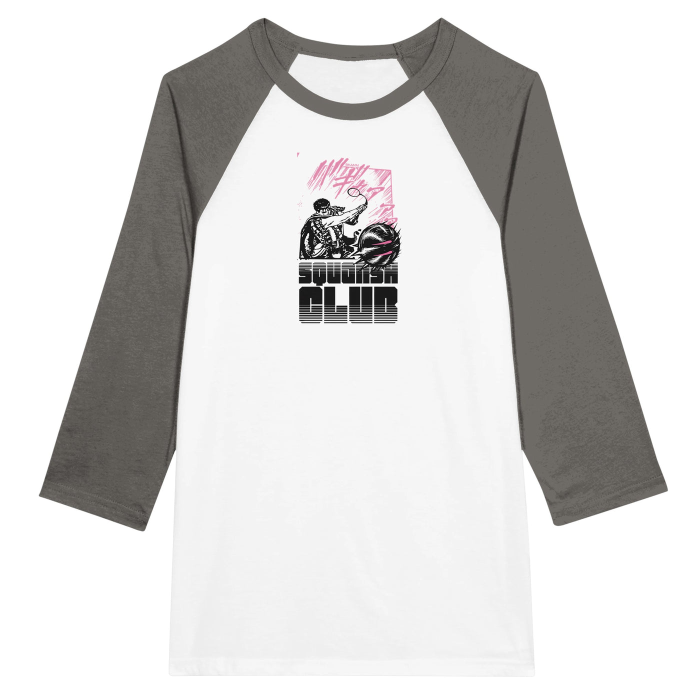

← Back to the shop



squansh club // guts // 3 quarter sleeve
$65
Currently unavailable
This item can't be ordered right now — the VERY NICE shop is paused.
Color
White and Asphalt
White and Navy
White and Black
Size
S
M
L
XL
2XL
This design appropriates a frame from p.198 of the Berserk Manga by Kentaro Miura. Guts' sword has been replaced with a squash racquet, flexing under the stress of the immense power with which he has smashed the squash ball out through the edge of the frame.
anime #berserk #guts #manga #squash #sport
----
The classic t-shirt with raglan 3/4 sleeves is a must have with soft blends of combed and ring-spun cotton.
- Contrast raglan sleeves and t-shirt colors
- Stylish fitted 3/4 sleeve
- Taped neck and shoulders for durability
- Classic fit
Size guide
| S | M | L | XL | 2XL | |
| A) Length (cm) | 69.9 | 72.4 | 74.9 | 77.5 | 80 |
| B) Width (cm) | 89.6 | 99.8 | 109.8 | 120 | 130.2 |
| B) Half Chest (cm) | 44.8 | 49.9 | 54.9 | 60 | 65.1 |
| C) Sleeve Length (cm) | 60.2 | 62.1 | 64 | 65.9 | 67.8 |
| S | M | L | XL | 2XL | |
| A) Length (inches) | 27.5 | 28.5 | 29.5 | 30.5 | 31.5 |
| B) Width (inches) | 35.3 | 39.3 | 43.2 | 47.2 | 51.3 |
| B) Half Chest (inches) | 17.6 | 19.6 | 21.6 | 23.6 | 25.6 |
| C) Sleeve Length (inches) | 23.7 | 24.4 | 25.2 | 25.9 | 26.7 |
Care instructions
| Wash | Machine wash warm (max 40C or 105F), wash garment inside out with similar colors |
| Tumble Dry | Low |
| Bleach | Only non-chlorine |
| Dry Clean | Do not dry clean |
| Iron | Do not iron |